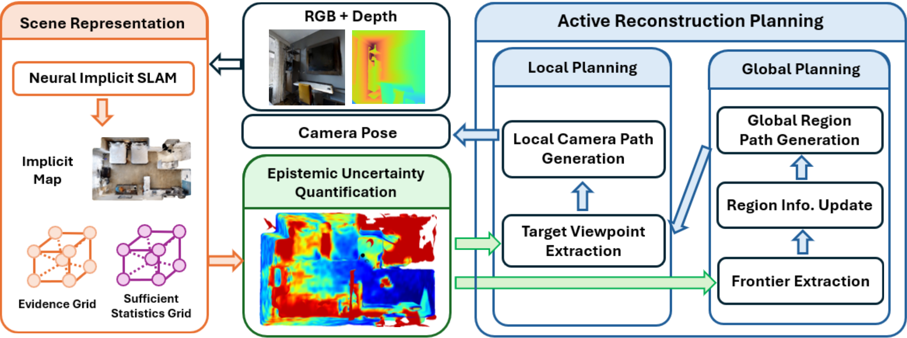
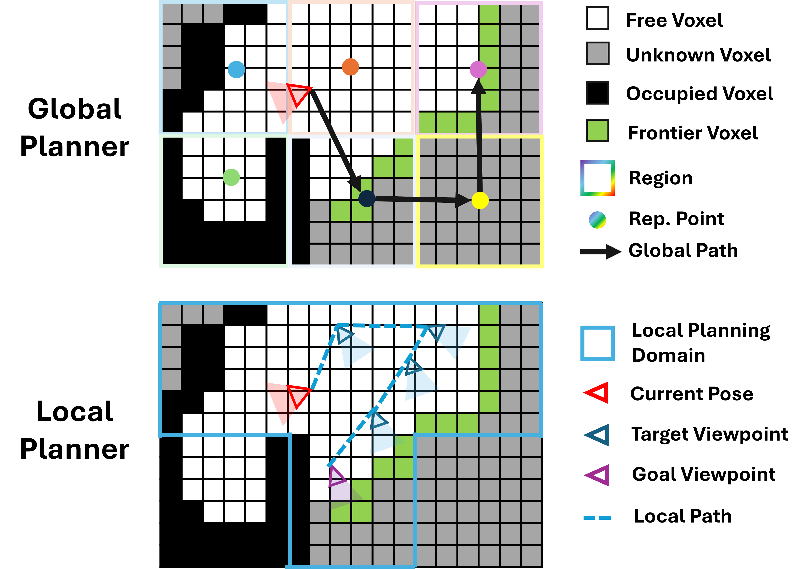
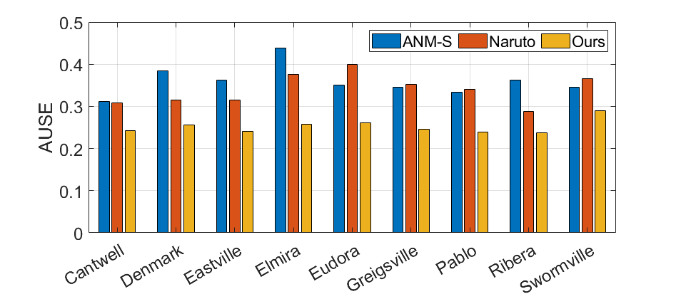
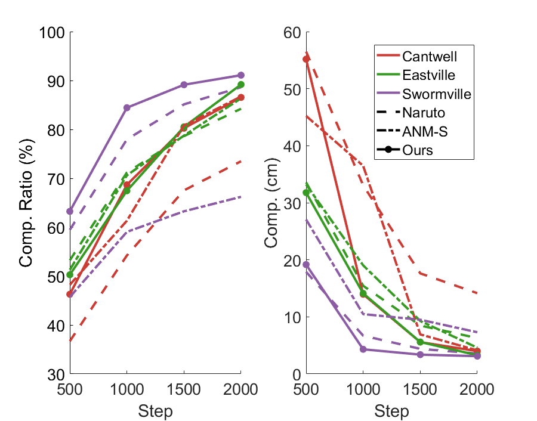
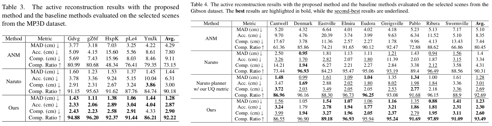
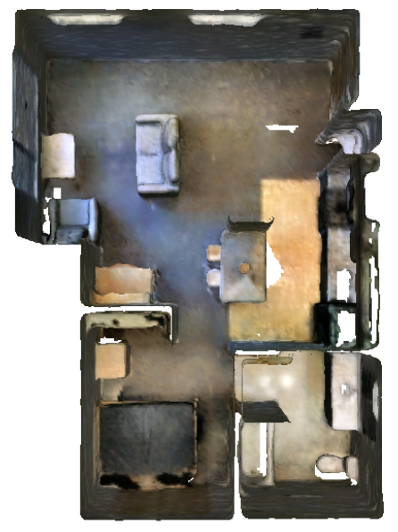
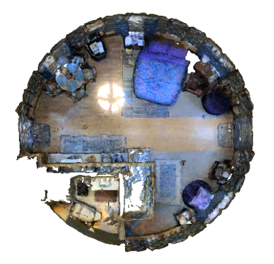
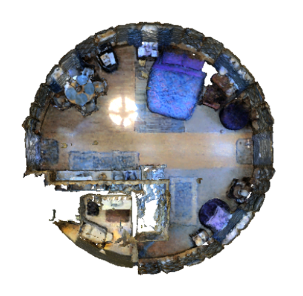

Method
Overall Pipeline
HERE integrates a neural implicit SLAM module with an epistemic uncertainty-driven hierarchical planner. Given RGB-D images, the mapping module learns an implicit map together with evidence and sufficient statistics grids, which are used to quantify epistemic uncertainty online. The hierarchical active reconstruction planner leverages this uncertainty for target viewpoint selection in local planning, and for frontier extraction in global region-level path generation. The planner then generates a smooth camera trajectory to guide the robot toward unexplored regions.

Uncertainty Quantification based on Evidential Deep Learning
We quantify epistemic uncertainty by extending evidential deep learning (EDL) to neural implicit mapping. A Normal Inverse-Gamma (NIG) prior is placed over the SDF prediction at each 3D point, and the posterior is updated via two lightweight learnable grids that predict a confidence score and a second moment. This design ensures spatial locality and real-time performance through trilinear interpolation, while keeping the mapping module unchanged. The entropy of the posterior NIG distribution serves as the epistemic uncertainty measure: it is high in poorly observed or unobserved regions and low where observations are sufficient, exhibiting a strong correlation with actual SDF prediction errors.

Hierarchical Planning
To achieve both comprehensive scene coverage and detailed reconstruction, we propose a hierarchical planning framework. The global planner decomposes the environment into fixed-resolution regions, classifies each as unexplored, exploring, or explored based on frontier and uncertainty information, and determines the optimal visitation order by solving a Traveling Salesman Problem. The local planner then refines the global path into a 6DoF camera trajectory by selecting target viewpoints that maximize joint epistemic uncertainty accumulated along the trajectory, using a greedy submodular optimization strategy. When no informative viewpoints remain, a fallback mechanism uses A* on the region connectivity graph to escape local optima and continue exploration.

Results
Quantitative Results
Uncertainty Quantification
We evaluate our epistemic UQ against other INR-based active reconstruction methods using the AUSE metric. Our uncertainty maps show strong spatial correlation with SDF prediction errors, outperforming all baselines on every evaluated scene in the Gibson dataset.

Reconstruction Completeness over Time
We compare reconstruction completeness over exploration steps against state-of-the-art methods on complex multi-room Gibson scenes. Our method achieves superior completion ratio and lower completion error, demonstrating the effectiveness of epistemic uncertainty-driven hierarchical planning.

Per-Scene Reconstruction Quality
We report completion metrics for individual scenes across both the Gibson and Matterport3D datasets. Our method achieves the best completion ratio and completion error in the majority of scenes, demonstrating consistent superiority across environments of varying scale and complexity.

Qualitative Results
Gibson Dataset
Drag the slider to compare reconstructed meshes between Naruto and our method. Our approach produces more complete and accurate reconstructions, effectively avoiding artifacts and empty holes in challenging regions.


Matterport3D Dataset
We further evaluate on five scenes from the Matterport3D dataset, which contains larger and more complex indoor environments. Our method consistently achieves higher completion ratio and lower completion error compared to baselines, demonstrating scalability to large-scale scenes through hierarchical planning.

Drag the slider to compare reconstructed meshes between Naruto and our method on Matterport3D scenes.


Real-World Experiments
To validate real-world applicability, we deploy HERE on a ground robot (Turtlebot3 Waffle) equipped with an RGB-D camera (Realsense D455), with pose provided by a motion capture system. The robot autonomously explores an indoor lab environment, and the reconstructed mesh demonstrates that our framework operates effectively under real-world conditions, producing high-quality scene reconstruction without manual data collection.
Related Links
Naruto (CVPR 2024) proposes an active NeRF reconstruction method driven by uncertainty from uncertain target observations, using sampling-based goal search for next-best-view selection.
Active Neural Mapping (ICCV 2023) integrates NeRF with an active mapping strategy, combining frame-level view selection with efficient hybrid scene representations.
ActiveSplat (RA-L 2025) extends active scene reconstruction to 3D Gaussian Splatting for high-fidelity real-time scene exploration.
FisherRF (ECCV 2024) estimates epistemic uncertainty using Fisher information for active view selection and mapping in radiance fields.